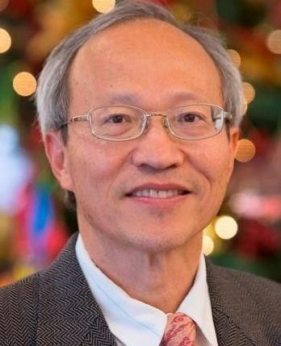

Professor Director, Computer Architecture and Networks Laboratory
Center for Advanced Computer Studies University of Louisiana at Lafayette Lafayette, LA 70504-4330 Phone: (337)482-6304 Fax: (337)482-5791 E-mail: tzeng@cacs.louisiana.edu